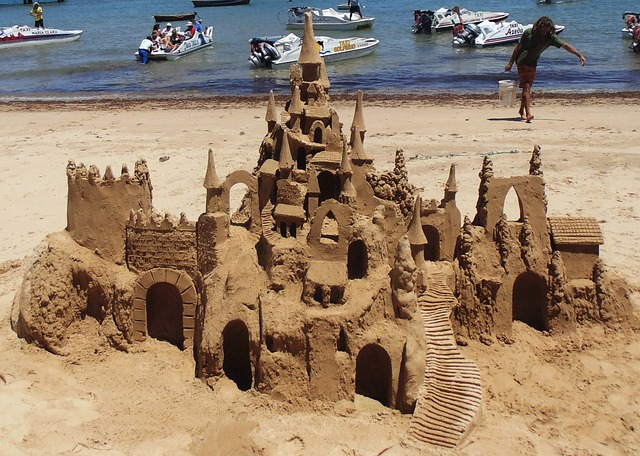
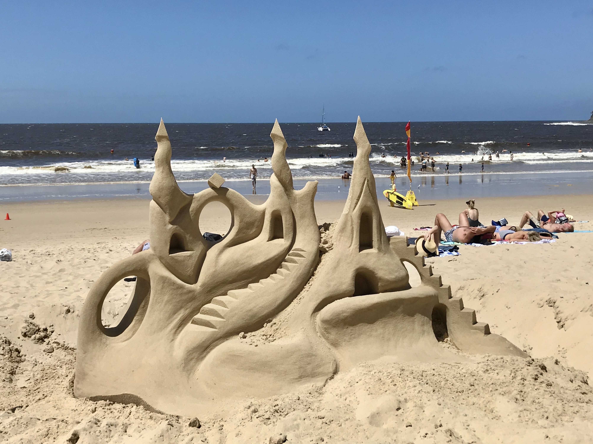
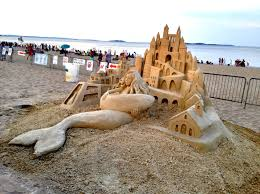

A lot of people think they know a thing or two about sandcastles. Boy are they wrong! Sandcastles have a rich hisotry, which up until now has gone largely ignored. THe reason for this is obvious. Sandcastles seem to wash away rather quickly after construction. But, it turns out they are never truly destroyed... only hidden.
Take for example these lovely little sandy castles right here. As you can see, they have not yet been washed away by the indifferent forces of the uncaring ocean:
  Now here's the real magic. Let's reveal some previously disappeared sandcastles. Click HERE to unveil the mysteries of even more sandcastle pictures!